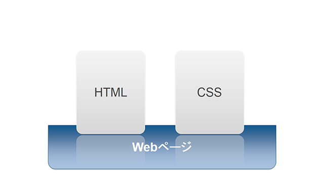

はじめてのスタイルシートに挑戦しよう
CSSは、Webページに視覚的な表現、つまり見た目の装飾を付加するための言語です。具体的には、HTMLでマークアップされた見出しや本文、画像、表、リストなどに対して、フォントサイズ、背景色、余白、枠線などのスタイルを適用できます。HTMLはWeb用の文書の構造を定義するための言語ですが、CSSはその文書に視覚表現、スタイルを指定するための言語にあたります。

以下に、CSS 2.1の定義を引用します。
CSS 2.1は著者およびユーザーが構造化文書（たとえば、HTML文書やXMLアプリケーション）にスタイル（たとえば、フォントや文字間隔）を付加することのできるスタイルシート言語である。文書の内容から表示スタイルを分離することで、CSS 2.1はWeb制作およびサイトの保守・管理を簡素化する。
標準化までの流れ
| 段階 | 英語表記 | 概要 |
|---|---|---|
| 草案 | Working Draft: WD | 仕様策定にあたっての最初のステップです。標準化に向けたレビューのために公開されます。 |
| 最終草案 | Last Call Working Draft: LC | 最終段階の草案です。仕様の基本的な部分が確定され、関連した技術要件や他の仕様との依存関係を満たしている状態です。 |
| 勧告候補 | Candidate Recommendation: CR | 仕様が要求を満たしているか、実装を試みるよう呼びかけて、実装と運用のテストを行います。 |
| 勧告案 | Proposed Recommendation: PR | 仕様の各機能についての実装が存在（あるいはそれに相当すると判断）し、最終承認を受けるための段階です。 |
| 勧告 | Recommendation: REC | 仕様の最終段階です。幅広いレビューとテストを経て、標準として仕様が確定しています。 |
なお、各ステップはスキップされたり、差し戻されたりすることがあります。
目次
- CSSとは
- CSSの記述方法
- カスケード処理
- セレクタ
- 値
- 色と背景画像
- フォント／テキスト
- 表
- リスト
関連項目
- CSSによるレイアウト
- CSS3
- Sass